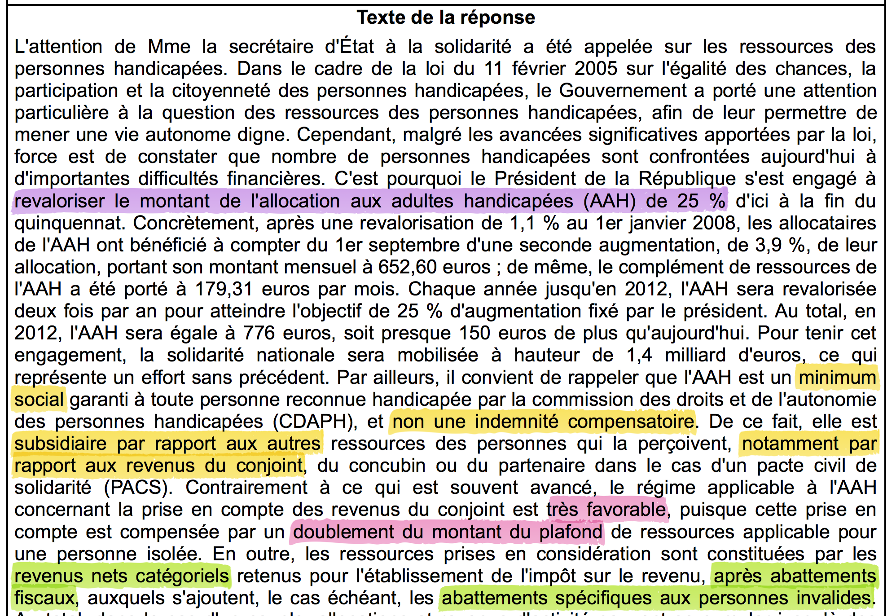

Le 17 mai 2013, la loi n° 2013-404 ouvre le droit au mariage, pour tous. Ou presque !
Aucune loi n’interdit les personnes handicapées de s’unir, mais dans la pratique, la réglementation les en dissuade. Nous verrons dans cet article quelle injustice frappe toutes celles et tous ceux dont l’handicap les empêche de travailler, et qui voudraient pour autant vivre une vie de couple “normale”. Ces derniers sont condamnés à voir leurs faibles revenus diminués voir carrément supprimés de part la prise en compte des revenus de leur conjoint dans le calcul de leur AAH (Allocation aux Adultes Handicapés), leur seule source de revenu, provoquant ainsi une situation intolérable de dépendance financière vis à vis de celui qui souhaite partager leur vie.12 Ce prix ce l’amour, afflige donc aux personnes présentant déjà une dépendance physique, une double peine. Cette situation, tout le monde à l’unanimité s’entendra pour dire qu’elle est inacceptable, qui trouverait normal que son salaire soit calculé en fonction de celui de son partenaire ? Pourtant la question n’est pas récente, nous montrerons qu’elle a été soulevée auprès des ministres un grand nombre de fois, et que les réponses données par le gouvernement, sont depuis 2007 toujours les même : de simples rappels à la législation ! Il est grand temps d’analyser le problème plus sérieusement, et d’engager un réel débat pour remédier à cette situation humiliante de dépendances qui contraignent les personnes handicapées à l’isolement ou qui, pour les plus téméraires, conduisent inévitablement à la fraude…
1 Article de Franck Seuret, un journaliste spécialisé dans le handicap, tiré du magasine Faire-Face - lien
2 Article du site handicap.fr - lien
Après avoir pris connaissance de cette réalité de subordination de la personne handicapée au portefeuille de son conjoint, j’ai commencé à mener mon enquête. Première étape : vérifier les faits, je vous présenterai donc rapidement le mode de calcul de l’AAH pour un couple, afin de mettre en lumière le problème de dépendance lié à celui-ci. Deuxième étape : faire une recherche au sein des questions de l’assemblée nationale qui traitent de ce problème, et analyser les réponses des ministres à ce sujet. Enfin troisième étape : répondre aux assertions des ministres en les confrontant à la réalité terrain, et ainsi rééouvrir le débat pour réfléchir à une solution, et ne pas se contenter de citer les lois actuelles.
Un mode de calcul de l’AAH hostile à la vie de couple
Je vais résumer rapidement le calcul présenté plus en détails dans mon précédent article
L’AAH pour les nuls, comprendre par l’exemple
Méthode : L’AAH versée s’obtient en comparant l’assiette du couple à un certain plafond. L’assiette du couple est égale à la somme de l’assiette du bénéficiaire et de l’assiette du conjoint, chacune étant déterminée par des abattements spécifiques sur leurs ressources respectives : celle du bénéficiaire est soumis à l’abattement 80/40, c’est-à-dire la partie des revenus qui est inférieur à 30% de la valeur du smic est abattue de 80% (donc on en garde que 20% pour constituer l’assiette), et la partie supérieure est abattue de 40% ; quant à l’assiette du conjoint elle est obtenue après abattement de 10% puis 20%.
Ce n’est pas si compliqué regardez, je résume tout cela ci-dessous, et des exemples sont disponibles en annexe.

Le contexte de cet article est celui d’une personne bénéficiaire de l’AAH ne pouvant pas travailler, c’est-à-dire dont l’AAH est la seule source de revenus. Ainsi dans toute la suite on considèrera l’assiette du bénéficiaire nulle.
Remarque : cet ensemble est loin d’être négligeable car le pourcentage de personnes handicapées ne travaillant pas (taux d’incapacité tout confondu 50%-79% ou > 80%) est de 82,8 % ! Cette hypothèse concernent donc la majorité des titulaires de l’AAH.


- Si son conjoint gagne moins de 1097 €, l’AAH n’est pas affectée.
- Si son conjoint gagne entre 1097 € et 2195 €, l’AAH décroît vers 0.
- Si son conjoint gagne plus de 2195 €, l’AAH est réduit à 0 €
Maintenant que l’on sait de quoi on parle, et la façon dont est affectée l’allocation du bénéficiaire s’il décide toutefois de vivre en couple, allons voir ce qu’en pense nos députés et ministres …
Un gouvernement qui juge “très favorable” le régime applicable à l’AAH
En voulant savoir si la question de la dépendance vis à vis du conjoint avait déjà été soulevée, j’ai fait quelques recherches sur le site de l’assemblée nationale. La question a déjà été abordé des dizaines de fois. Voici une liste non exhaustive des questions émises par certains députés et des réponses fournies par le ministère :
- Question n°2490, 13ème législature, de M. François Vannson, août 2007
- Question n°23265, 13ème législature, de M. Jean-Marie Morisset, mai 2008
- Question n°26409, 13ème législature, de M. Gilles d’Ettore, juillet 2008
- Question n°35016, 13ème législature, de M. André Gerin, novembre 2008
- Question n°35013, 13ème législature, de M. François Brottes, novembre 2008
- Question n°1503, 14ème législature, de M. Jean-Pierre Decool, juillet 2012
- Question n°20766, 14ème législature, de M. Michel Destot, mars 2013
- Question n°24139, 14ème législature, de M. Michel Ménard, avril 2013
- Question n°25562, 14ème législature, de M. Bernard Accoyer, avril 2013
- Question n°52154, 14ème législature, de Mme Barbara Pompili, mars 2014
Je vous invite chaleureusement à lire ces courtes question-réponse. Vous remarquerez que, ce qui est frappant, est la réponse systématique toute faite que donne le ministre. Je trouve même grotesque la façon dont on réduit la réponse à un vulgaire copier coller…
Jugez par vous même sur ces quelques aperçus annotés :

Enumérons les arguments avancés pour justifier le refus de la déconjugualisation des ressources du bénéficiaire de l’AAH et de son conjoint :
- L’AAH est un minimum social et non une prestation compensatoire.
- L’AAH obéit au principe de subsidiarité.
- Le plafond de l’AAH est doublé pour le couple, ce qui en fait un régime “très favorable”
- L’AAH a été revalorisée à hauteur de 25% pendant le précédent quinquennat.
- Les ressources prises en compte pour le calcul de l’AAH sont les revenus net catégoriels après abattements fiscaux et abattements spécifiques aux personnes invalides.
- La prestation de compensation de l’handicap (PCH) permet de prendre en compte les surcoûts liés à l’handicap, et permet donc de recentrer l’AAH sur sa vocation de revenu d’existence.
- L’abattement 80/40 et les règles de cumuls sont très favorables et incitateurs à l’emploi.
Vous pouvez vérifier, dans toutes les réponses ces 7 points sont presque systématiquement recopiés, mot pour mot, pour justifier le refus. Alors nous allons reprendre ces arguments, point par point, en éclairant le novice en matière d’handicap, sur la réalité terrain…
L’AAH a été revalorisée à hauteur de 25% pendant le précédent quinquennat.
Cette revalorisation était une bonne chose, nécessaire. Nuançons toutefois. Le non-initié pourrait interpréter, à tord, qu’il est un quart plus riche qu’il y a 5 ans en arrière, et donc que sa situation est 25% plus appréciable qu’auparavant. En réalité, le montant d’un salaire n’est pas un indicateur économique pertinent. Pourquoi ? Et bien imaginez que vous gagniez hier 1500 € par mois, et que vous achetez avec l’intégralité de votre salaire des patates, à 15 € la patate (chère la patate, “c’est la crise” !) . Vous pouvez vous payer le luxe d’acheter “100 patates !!!”. On vous propose demain une augmentation, vous gagnerez alors 1600 € par mois. Serez vous plus riche ? Ca dépend. Ca dépend car si le prix des patates passe de 15 à 20 €, alors vous ne pourrez plus acheter que 80 patates ! Ce b.a.-ba de l’économie, c’est ce qu’on appelle le pouvoir d’achat. Pour le mesurer on doit donc comparer l’augmentation d’un salaire avec la hausse des prix de consommations (ce qu’on appelle l’inflation).
Une fois que l’on garde cela à l’esprit, on relativise concernant une augmentation ! Par exemple lorsque l’AAH a augmenté de 24,8% entre 1995 et 2007, les prix, eux, ont augmenté de 18,7%.3. De même, lorsqu’au 1er septembre 2013 l’AAH a été revalorisée de 1,75% pour passer de 776,59 € à 790,18 €, les prix eux ont augmenté en moyenne de 1,1 % donc le pouvoir d’achat des allocataires de l’AAH est en réalité de 0,65 %, soit 5,04 €.4 Donc j’insiste, cette revalorisation était une bonne chose, mais qu’il faut nuancée. Notons que l’AAH (même couplée avec la Majoration pour la vie Autonome ou le complément de ressources) reste toutefois encore en dessous du seuil de pauvreté qui est de 977 € par mois567.
3 Revalorisation de l’AAH traitée sur officiel-handicap
4 Article du site Faire-face - L’AAH va augmenter d’1,75% le 1er septembre à 790,18€
5 Article du site lacroix - lien
6 Le seuil de pauvreté est défini de manière relative, par rapport au salaire médian. On considère comme pauvre une personne dont les revenus sont inférieurs à un certain pourcentage de ce revenu médian. Ce revenu médian est celui qui partage la population en deux, autant gagne moins, autant gagne davantage. Le taux le plus souvent considéré est 60% du revenu médian - lien
7 Evolution du seuil de pauvreté sur l’insee - lien
Remarque : certes l’AAH donc le plafond des ressources a été revalorisé, mais de la même manière les salaires ont augmenté, ce qui réduit l’influence sur la formule :
AAH = (plafond des ressources - assiette du conjoint)/12
Les ressources prises en compte pour le calcul de l’AAH sont les revenus net catégoriels après abattements fiscaux et abattements spécifiques aux personnes invalides.
Voilà qui semble confirmer l’analyse que je faisais dans ce précédent article :
Ambigüité sur la nature des ressources à déclarer à la CAF
Sachez donc, Madame, Monsieur le ministre, que dans la pratique, la CAF ne tient absolument pas compte des abattements fiscaux que vous citez… et ne respecte donc pas la législation dictée par le code de la sécurité sociale ! Quant aux abattements spécifiques aux personnes invalides, ils ne sont pas applicables aux revenus d’activité professionnelle perçus par l’allocataire d’après le code de la sécurité sociale8, alors que qu’ils le sont dans l’établissement de l’impôt9 !
8 Article R821-4 II 3°) du code de la sécurité sociale
9 Article 157 bis du code des impôts
L’abattement 80/40 et les règles de cumuls sont très favorables et incitateurs à l’emploi.
Sur l’idée je suis d’accord, la fonction d’abattement en forme de “coude” est un modèle qui ne me semble pas trop mauvais pour motiver l’emploi. En revanche comme le point précédent (prise en compte des ressources après abattements) n’est pas respecté par la CAF, l’abattement 80/40 n’est pas aussi favorable que vous le prétendez.
De nouveau, l’abattement 80/40 concerne les personnes handicapées pouvant prétendre à l’emploi, il n’est donc pas un argument valable pour la population que je défends dans cet article, qui représente une majorité des bénéficiaires de l’AAH et qui est victime de l’injustice du calcul de son allocation par les revenus du conjoint, qui eux ne sont pas soumis à l’abattement 80/40.
Le plafond de l’AAH est doublé pour le couple, ce qui en fait un régime “très favorable”
Vraiment ? On ne doit pas voir la même courbe de décroissance… je vous la redonne :
Comme vous le signalez dans la réponse à la question n°1503, “l’AAH sera suspendue si le conjoint perçoit une rémunération nette mensuelle de 2200 €”, et plus précisément elle décroit progressivement vers 0 €, donc même si le conjoint gagne moins de 2200 €, l’AAH du bénéficiaire, qui je rappelle est sa seule source de revenu possible, devient dérisoire et indécente. Je vous pose alors la question :
Votre conjoint gagne-t-il plus de 2200 € ? Si oui trouveriez vous normal que votre salaire soit suspendu ? Imagineriez vous devoir lui demander de l’argent de poche pour aller acheter une baguette de pain ?
La prestation de compensation de l’handicap (PCH) permet de prendre en compte les surcoûts liés à l’handicap, et permet donc de recentrer l’AAH sur sa vocation de revenu d’existence.
Lorsque l’on lit cela, on comprend clairement que la personne qui rédige cette réponse n’a aucune idée de la réalité du monde de l’handicap. Je n’en voudrais aucunement à une personne lambda, qui n’est pas concernée de près ou de loin par l’handicap, d’ignorer cette réalité. En revanche quand il s’agit d’un ou d’une ministre chargé de l’Handicap, un minimum de préoccupation et de lucidité est requis…
Je tiens encore une fois à signaler qu’un certain nombre de mesures positives ont été adoptées pour améliorer le quotidien des personnes handicapées, et la PCH en fait partie. Loin de moi l’idée de cracher dans la soupe donc ! Seulement la réalité c’est que la PCH est loin de couvrir toutes les dépenses liées à l’handicap. A titre d’expérience personnelle je pourrais vous faire l’inventaire des aménagements et du matériel médical que la PCH a pu seulement couvrir en partie dans le meilleur des cas, soit pas du tout car considérés comme “du luxe”. Si par ailleurs vous ne disposez pas d’une bonne mutuelle, les bases de remboursements de la sécurité sociale ne permettent pas non plus de bénéficier de matériel médical pourtant indispensable à la santé des personnes handicapées. Pour ma part j’ai eu la chance d’avoir une association qui s’est créée autour de moi (famille, amis) pendant les premières années pour apporter une aide financière dans ces achats, mais tout le monde n’a pas cette chance. Aujourd’hui l’association n’existe plus, mais je continue inévitablement à faire périodiquement des dépenses importances dans l’achat de matériel médical, et c’est le cas de la plupart des bénéficiaires de l’AAH (médicaments, soins, rééducation, aides techniques, aides à domicile, transport adapté, adaptations du domicile, …)
Voilà pourquoi il est naïf de penser que la PCH prend en charge les surcoûts liés à l’handicap, et que l’AAH peut être recentrée sur sa vocation de minimum d’existence. La vérité, c’est qu’une partie de l’AAH va a fortiori être consacrée à ces dépenses, et que vous vous imaginez bien qu’avec 790,18 € par mois, c’est-à-dire quand on vie sous le seuil de pauvreté, on est forcément assez limité dans le budget…

Deux solutions sont envisageables : soit conserver une AAH qui soit un “revenu d’existence” et faire en sorte que la PCH couvre réellement les besoins matériaux et médicaux des personnes handicapées ; soit augmenter significativement l’AAH. Cette seconde alternative est revendiquée par l’APF depuis plusieurs années : garantir un revenu d’existence décent à tous10. Mais je crains que cette revendication soit pour le moins utopique, quand on pense que le gouvernement a pour objectif de faire 50 milliards d’euros d’économie d’ici 201711 en adoptant une politique d’austérité… on imagine mal l’AAH bondir de 790,18 € à un smic ! Il est fort à parier que les choses se déroulent comme ça :

Bref, revenons à nos moutons. Quand on fait l’inventaire, on voit finalement que les seuls véritables arguments qui justifient le refus de déconjugualiser les ressources sont les deux derniers :
L’AAH est un minimum social et non une prestation compensatoire et obéit au principe de subsidiarité.
Autrement dit c’est le statut que l’on confère à l’AAH qui ne permet pas de s’en extirper.
Le premier est clair et dit que l’AAH est comme tous les autres minima sociaux : ils visent à assurer un revenu minimal à une personne en situation de précarité. Ce sont des prestations sociales non contributives, c’est-à-dire qu’elles sont versées sans contrepartie de cotisations. L’exemple le plus connu est sans doute celui du RSA. La différence majeure à mon sens entre l’AAH et le RSA, est que les personnes handicapées présentent un taux d’incapacité permanente, et donc pour beaucoup d’entre eux l’accès à l’emploi est tout simplement impossible et durable, la précarité est donc elle aussi permanente ! C’est la raison pour laquelle on devrait faire perde à l’AAH son statut de minimum social, pour celles et ceux qui ne peuvent pas ou plus travailler, tout simplement.

Le second argument invoque le principe subsidiarité. Le principe de subsidiarité est une maxime politique et sociale selon laquelle la responsabilité d’une action publique, lorsqu’elle est nécessaire, doit être allouée à la plus petite entité capable de résoudre le problème d’elle-même. C’est donc le souci de veiller à ne pas faire à un niveau plus élevé ce qui peut l’être avec plus d’efficacité à une échelle plus faible. Pour être clair : pourquoi l’état devrait-il financer la personne handicapée si son ou sa partenaire est en mesure de le faire ?
Si le fait de suspendre la seule source de revenus d’une personne en la rendant dépendante de son conjoint ne vous choque pas, laissez moi vous remémorer quelques éléments historiques…
Le long combat du libre salaire de la femme
Il y a quelques semaines était encore disponible sur le site de l’assemblée nationale, un document très intéressant qui relatait un long combat menait pas les femmes. L’ayant enregistré juste avant qu’il ne disparaisse, je vous en fais profiter.
Il est écrit par Bernard Accoyer, oui, la même personne qui a attiré l’attention du gouvernement sur la question n°25562 en avril 2013 (voir plus haut) ;). Le début du Préface est le suivant :

Je pense que vous voyez où je veux en venir…
Ce long combat commença avec un premier dépôt de proposition de loi le 9 juillet 1894, et le rapport du Sénat fut donné effectivement en 1907, soit 11 ans plus tard ! Mais ce n’est pas tout… Il faudra attendre l’année 1965 (soit 58 ans supplémentaires!) pour que les femmes puissent gérer leurs biens propres (ouvrir un compte bancaire) et exercer une activité professionnelle sans le consentement de leur mari.
Faudra-t-il attendre aussi longtemps pour délivrer les personnes handicapées de leur dépendance financière ?
Etude statistique des bénéficiaires de l’AAH et conséquences de la prise en compte des revenus du conjoint
En 2006, l’insee recensait que 65,4% des français entre 25 et 64 ans vivent en couple12.
12 Statistiques de l’insee sur la vie en couple - lien
13 Article de Marcel Nuss sur l’injustice de la prise en compte des revenus du conjoint - lien
Concernant les personnes handicapées, au 31 décembre 2012, moins de 25% d’entre eux sont en couple ! Ceci est valable pour les handicaps “lourds” (dont le taux d’incapacité est supérieur à 80%) comme pour les autres handicaps dont le taux d’incapacité se situe entre 50% et 79% ! Par conséquent on ne peut pas justifier de ce faible taux uniquement à travers la dimension “handicap”, il est clair que la dimension “financière” a un impact certain sur la possibilité de vivre en couple ou non.13


À l’heure où l’on parle d’assistance sexuelle, pourquoi ne pas simplement donner le droit d’aimer? Cette situation pousse fatalement les personnes handicapées à l’isolement, ou pour les plus téméraires à dissimuler leur statut conjugal… Anatole France, brillant écrivain de la troisième république, et auteur de nombreuses critiques littéraires et sociales, disait :
“Quand les lois seront justes, les hommes seront justes”
Qu’en est-il du “prix de l’amour” dans les autres pays européens ?
Il y a malheureusement assez peu d’études comparatives des politiques du handicap dans les différentes pays européens.1415 Cela dit il ne faut pas aller chercher bien loin pour trouver un exemple de pays qui prenne réellement la question au sérieux : la Belgique !
14 Conseil français des personnes handicapées pour les questions européennes - lien
15 Etude comparative des politiques du handicap dans plusieurs pays européens - lien
16 Article sur le prix de l’amour en Belgique sur handicap.fr - lien
L’information a été reléguée sur plusieurs sites16[^rf18-750] en décembre 2013 avec des gros titres alléchants comme les journalistes savent bien le faire :
“Le prix de l’amour aboli pour les personnes handicapées en Belgique !”
Du calme, du calme, pour le moment aucun texte officiel n’a encore vu le jour, mais une belle perspective initiée par Philippe Courard, secrétaire d’Etat aux personnes handicapées, suscite l’intérêt et l’espoir. Celui-ci déclarait sur une chaine radio17
17 Le prix de l’amour aboli pour les personnes handicapées sur la radio RTL - lien
On conserve son handicap, alors on doit pouvoir conserver son allocation d’intégration
Pour reformuler les propos de Philippe Courard de manière un tantinet plus percutante je dirais même plus :
“Si tu prends mon AAH, prend mon handicap !”
Cette volonté de mettre un terme à cette injustice avait déjà germé dans un précédent rapport de Philippe Courard18 :
18 Des allocations qui n’handicapent pas, p. 12
On peut relever dans le régime des allocations les obstacles suivants à l’autonomie des personnes handicapées : […] A côté de la prise en compte des revenus de la personne handicapée s’ajoute également dans le calcul de l’allocation d’intégration celle des revenus de son partenaire.
Plus récemment celui-ci déclarait dans un communiqué de presse19 :
19 Communiqué de presse de Philippe Courard datant du 19 décembre 2013
Introduire le principe de l’allocation d’intégration pour tous, si possible en réduisant, ou en supprimant, la prise en compte des revenus du ménage.
Dans cette note du même jour20, appartenant au conseil des ministres, la partie “si possible en réduisant, ou en supprimant, la prise en compte des revenus du ménage” a étrangement disparue… Ces dispositions sont prévues pour 2017, espérons que d’ici là le gouvernement français aura révisé sa copie et qu’il oeuvrera dans ce sens !
20 Note d’orientation sur la réforme de la loi relative aux allocations aux personnes handicapées, appartenant au conseil des ministres belge
Conclusion et proposition de débat au sein de l’assemblée nationale
Cet article avait pour vocation première d’exposer la situation absurde à laquelle sont confrontées les personnes handicapées, devant choisir entre l’amour et l’autonomie financière. Il me semble crucial de faire entendre ce message, non pas seulement aux bénéficiaires de l’AAH pour les avertir, mais aussi et surtout aux membres du gouvernement qui sont en mesure de faire bouger les lignes. Comprendre la situation d’autrui, c’est savoir faire preuve d’empathie, et c’est il me semble une étape indispensable pour mener une réflexion qui a trait à l’handicap, au social, et donc à l’humain. Les réponses mécaniques apportées jusque’à aujourd’hui par le ministre chargé de l’handicap, ne sont en ce sens pas recevables. Les arguments avancés, eux aussi, sont discutables, et il me paraissait nécessaire d’apporter un éclairage en les confrontant à la réalité, cette réalité d’inaccessibilité pas seulement matérielle, mais aussi inaccessibilité à l’emploi et l’amour. Cet article ne se voulait pas être un “coup de gueule”, mais davantage une piste de réflexion autour de cette injustice, une rampe d’accès mentale. Cette injustice va quoiqu’il arrive attirer de nouveau l’attention du ministre de l’handicap, puisque Bernard Accoyer et Barbare Pompili l’ont récemment, une fois de plus, exposée dans les questions n°25562 et n°52154 de l’assemblée nationale. C’est pourquoi il était important de faire le point, pour éviter je l’espère d’obtenir la même réponse préconçue, fournit jusqu’à présent. La deuxième volonté de cet article est donc de réouvrir le débat, en se posant la question de savoir comment mettre fin à cette injustice. La proposition de déconjugualisation des ressources mènera forcément à reconsidérer le statut de l’AAH. Actuellement nous avons constaté qu’une majorité des bénéficiaires, quand bien même ceux-ci trouveraient l’amour, vivent seuls. Donc leur allocation est versée quoiqu’il en soit. Leur permettre de vivre en couple en conservant leur AAH ne serait donc qu’une régularisation de leur situation. Le coût engendré par une telle réforme concernerait principalement la population “en couple sans enfant” (puisqu’avec un enfant le plafond est relevé) qui représente 12% des bénéficiaires. Dans la mesure où nous demandons de revoir les modalités de calcul de l’allocation aux adultes handicapés, nous devons pour notre part avoir conscience des contraintes budgétaires qui s’imposent à nos dirigeants. De ce fait, il serait indispensable de réaliser une étude scientifique sérieuse s’appuyant sur des données statistiques qui 1) estimerait le coût de la réforme, 2) ciblerait les potentiels bénéficiaires lésés, et enfin et j’insiste 3) qui serait totalement transparente au citoyen lambda désireux de comprendre la décision prise par le gouvernement.
Enfin je terminerais par signaler que François Hollande, lors de son discours de lancement de campagne, a déclaré que “chaque loi comprendrait son volet handicap”21. Alors, le changement, c’est maintenant, ou c’est maintenu? 😉
21 discours du Bourget de François Hollande - lien
Annexes
Annexe n°1 : exemples de calculs d’AAH en fonction des revenus du conjoint
Cas n°1 : Andy ne travaille pas, touchait jusqu’alors l’AAH à taux plein (790,18 € par mois), et décide de s’installer vivre avec Pierre qui gagne le smic (1128,70 € par mois).Puisque Mademoiselle Andy ne travaille pas (et ne perçoit par ailleurs aucun autre type de revenus), ses ressources, comme son assiette, sont nulles. Calculons l’assiette du conjoint
assiette de Pierre = (1128,70 x 12) x 0,9 x 0,8 = 9751,92 €
qui correspond du coup à l’assiette du foyer :
assiette du foyer = assiette d’Andy + assiette de Pierre = 0 + 9751,92 = 9751,92 €
On en déduit l’AAH d’Andy :
AAH d’Andy = (plafond couple – assiette du foyer)/12
soit :
AAH d’Andy = (18 964,32 - 9751,92)/12 = 768 € par mois
Cas n°2 : Andy ne travaille pas, et Paul, le cousin de Pierre, lui trouve un job dans sa boite. Désormais Pierre est rémunéré 1500 € par mois. Calculons l’AAH qui sera versée à Andy :
assiette de Pierre = (1500 x 12) x 0,9 x 0,8 = 12 960 €
AAH d’Andy = (18 964,32 – 12 960)/12 = 500 € par mois
Du fait que Pierre gagne maintenant 1500 € à la place du smic, ampute (au sens figuré, elle est déjà suffisamment handicapée!) à Mademoiselle Andy près de 300 € sur son AAH.
Cas n°3 : Mademoiselle Andy tombe amoureuse de Jacques, son kiné, elle se sépare alors de Pierre et part vivre chez Jacques, qui gagne 2200 € par mois.
assiette de Jacques = (2200 x 12) x 0,9 x 0,8 = 19 008 €
Comme l’assiette de Jacques est supérieure au plafond des ressources du couple :
assiette de Jacques > 18 964,32 € ==> AAH d’Andy = 0 €
Résultat : Mademoiselle Andy, bien qu’éperdument amoureuse de Jacques, se retrouve entièrement dépendante financièrement de son conjoint…
Annexe n°2 : Analyse d’un cas pratique tiré de la question n°1503 de l’assemblée
Dans sa réponse, le ministre avance la chose suivante :
la prise en compte des revenus du conjoint n’a pas d’impact défavorable pour les allocataires. Au contraire […] pour un couple dont l’allocataire exerce une activité contrairement à son conjoint, sa rémunération peut atteindre jusqu’à 1 600 euros nets mensuels et continuer à bénéficier du montant maximum de l’AAH
C’est tout à fait exact. Mais le choix de cet exemple est particulièrement vicieux et fait preuve d’une mauvaise foi certaine. En effet cette situation, pour qu’elle ait lieu, doit réunir les conditions suivantes :
- Que l’allocataire soit en mesure d’exercer une activité professionnelle à temps plein.
- Que l’allocataire ait un salaire d’activité supérieur au smic.
- Que l’allocataire vive en couple.
- Que son conjoint quant à lui ne travaille pas.
Cela fait comme vous pouvez vous en douter beaucoup de conditions à remplir… mais soyons plus précis, et évaluons la probabilité de chacun de ces événements grâce aux statistiques réalisées par la CNAF22 et la DREES23 :
22 Caf l’essentiel : les bénéficiaires en emploi de l’AAH - lien
23 Dossier de solidarité et de santé de la Drees sur l’AAH - lien
- La proportion d’allocataires qui travaille est de 17,2%
- La proportion d’allocataires gagnant plus que le smic est de 11%
- La proportion d’allocataires vivant en couple est de 22%
- La proportion de français au chômage est de en mai 2014 de 9,7%
Il n’y a pas besoin d’avoir fait polytechnique pour comprendre que l’intersection de ces événements a une probabilité très faible d’avoir lieu… et donc que cet exemple fait preuve de mauvaise foi car il s’agit d’un cas ultra minoritaire de profil de bénéficiaire à qui la prise en compte des revenus du conjoint profite !
Annexe n°3 : Analyse d’un cas pratique issu de la question n°35016 de l’assemblée
Parmi les 10 réponses apportées par les ministres, celle de la secrétaire d’état à la solidarité, qui fait écho à la question n°35016, est la seule qui manifeste une attention particulière à l’égard de la situation, elle dit à ce propos :
S’agissant du désir de certaines personnes handicapées et d’associations de voir supprimée la prise en compte des ressources du conjoint, concubin ou partenaire de pacte civil de solidarité pour le calcul du montant de l’AAH, le Gouvernement a clairement entendu leur revendication.
Et elle apporte, une fois n’est pas coutume, une justification cohérente au refus de déconjugualisation, qui fait suite à une étude préliminaire :
Il est clairement indispensable, comme je le disais dans la conclusion, de veiller à traiter les cas des potentielles personnes lésées par une nouvelle réforme. En informatique on appellerait ça des “tests de non régression”. Et effectivement le cas des couples avec enfants pourrait poser problème, car en présence d’un ou plusieurs enfants, le plafond des ressources du couple est majoré de 4 741,08 euros par enfant à charge, et cette marge permet au bénéficiaire de conserver, à salaire fixé, une AAH différentielle plus élevée . Dommage que cette étude du gouvernement ne soit pas rendue publique… Le nombre de couples avec enfants représente une proportion de 10% de l’ensemble des bénéficiaires de l’AAH. Bien qu’inférieur à la proposition de couples sans enfant (12%) et des personnes seules (72%) qui voudrait se défaire de l’injustice de la considération des ressources du conjoint, il ne faut en aucun cas défavoriser une minorité pour une autre… Voilà pourquoi une réflexion et une étude doivent être conjointement menées afin de proposer une solution optimale pour l’ensemble des configurations familiales en tenant compte des contraintes budgétaires.Après avoir sérieusement examiné la proposition de suppression de la prise en compte des ressources du conjoint, le Gouvernement ne souhaite pas lui donner de suite favorable, compte tenu des conséquences financières qu’elle aurait sur bon nombre de foyers. En effet, la non prise en compte de ces revenus aboutirait logiquement à la suppression du doublement du plafond de ressources applicable pour une personne isolée. 60 % des couples avec enfants et 80 % des familles monoparentales verraient alors leurs ressources diminuer fortement (en moyenne 260 EUR par mois).